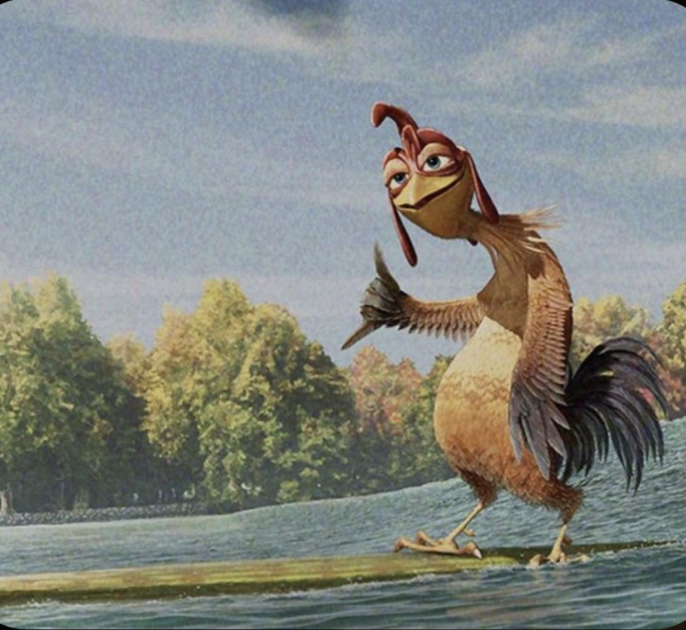

Информация об авторе
Грязнова Арина Павловна
ЭФБО-04-24
Обо мне: Я родилась в Коломне. Цифры рано ударили в голову. В четыре активно играла в доту 2. Потом музыкальная школа, школа, художественная школа, игры. Так я становилась сильней и выиграла int 2021.
-Самые быстрые пальцы на диком западе
-Скорость реакции выше, чем у человека-паука
-Зрение лучше, чем у орла
-Критическое мышление развито лучше, чем у шимпанзе
Мой опыт работы:
Опыт 1
Работала в компклубе тренером.
Работала в компклубе тренером.
Опыт 2
Продавала бургеры в юнифуде.
Продавала бургеры в юнифуде.
Опыт 3
Професиионально собирала компьютерные кресла.
Професиионально собирала компьютерные кресла.